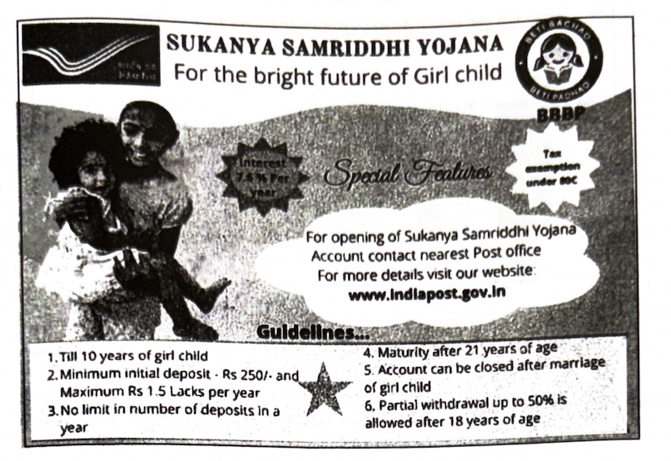
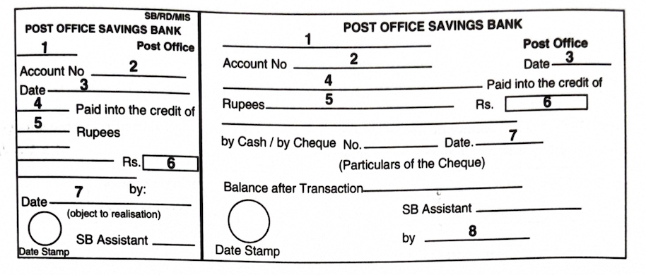

Assignment - 7
SECTION - B
4. Read the following passage carefully and answer ANY FOUR questions
given after it in a word or a sentence each.
4 × 1 = 4M
“The door opened and Jim stepped in and closed it. He looked thin and very serious. Poor fellow he was only twenty-two and he was burdened with a family! He needed a new overcoat and he was without gloves. Jim’s eyes were fixed on Della, and there was an expression in them that she could not read, and it terrified her, it was not anger, nor surprise. He simply stared at her with a strange expression on his face.”
i) How did Jim look?
ii) Who was burdened with a family?
iii) What did Jim need?
iv) Where were Jim’s eyes fixed?
v) How was Jim’s expression?
vi) What did Della find in Jim’s expression?
vii) Jim was angry with Della. True or False?
viii) Write the synonym of the word ‘looked’ from the passage.
5. Read the following passage carefully and answer ANY FOUR questions
given after it in a word or a sentence each.
4 × 1 = 4M
Bird Lover of a Rare Kind
Penumaka Malakshmi (a man, please) of Kadium in East Godavari district is a daily wage earner from a downtrodden community. Yet, he has been feeding thousands of birds regularly for over six decades. He is now seventy-two and his service continues. He collects sheafs of paddy from farmers during the harvest time. He stores those paddy bundles in a nearby temple. Every evening he picks up some years of paddy and weaves them into ornamental tassels and hangs them from buildings. Birds in flocks feed on them joyously. On New Year Days, he erects an arch near the temple and hangs some beautiful woven tassels from it. Thousands of chirping birds picking grains from that ornamental arch is a sight to behold! This rare act of real charity has seen the light of day as a national best teacher awardee, Mr Chilukuri Srinivas Rao (himself a lover of dogs and plants, feeds hundreds of stray dogs every day and planted over one lakh saplings so far!) has written about Malakshmi in Prajasakthi (January, 2021).
i) How does Penumaka Malakshmi make his living?
ii) How does Malakshmi find means to feed hundreds of birds every day?
iii) What is his art that attracts people’s attention towards his charity?
iv) How has Malakshmi’s rare act of charity come to light?
v) Write the idiom used in the passage to mean become publicity known.
vi) Write the word used in the passage that forms a set of homophones with site/cite.
vii) Find out the synonym from the passage of ‘see’.
viii) Mark stress on the right syllable of the word ‘community’.
```html
6. Study the advertisement given below and answer ANY FOUR questions
given after it.
4 × 1 = 4M

i) What is being promoted through this advertisement?
ii) Why has the programme been launched?
iii) What is the minimum initial deposit amount of SSY?
iv) What is the rate of interest for SSY?
v) Number of deposits one can make in a year?
vi) Partial withdrawal up to 50% is allowed after 18 years of age. Is this statement true or false?
7. Study the bar graph below and answer ANY FOUR questions given
after it.
4 × 1 = 4M

i) What does the bar graph present?
ii) Ice cream of which flavour do people like the most in shop A?
iii) How many ice creams of almond flavour are sold in shop B?
iv) Find the total number of ice creams of chocolate flavour sold in shop A and shop B.
v) 30 ice creams of coconut flavour are sold in _____ (Fill in the Blank)
vi) Ice cream of which flavour do people like more in shop B, chocolate or vanilla?
vii) How many ice creams of mango flavour are sold in shop A?
viii) How many ice cream flavours are shown in the graph?
SECTION - C
(NOTE): Answer for this section must be written at one place in the same serial order.
8. Rewrite the following passage/sentences using EIGHT punctuation
marks wherever necessary.
8 × ½ = 4M
a) after the citys rain-fed potholes the transition to smooth roads within the campus of the thiagarajar college of engineering is more than a treat. the man behind the tar-topped tracks is known as Madurai’s Plastic Road Man
9. Match ANY FOUR of the following words in Column-A with their
meanings/definitions in Column-B.
4 × 1 = 4M
| Column A | Column B |
|---|---|
| 1) Inevitable | a) (a mark) that cannot be erased easily |
| 2) Gregarious | b) a collection of dried plants |
| 3) Feminist | c) that which will happen and cannot be avoided |
| 4) Herbarium | d) a person who fights for the rights of women |
| 5) Perennial | e) (of people) who love the company of others |
| 6) Indelible | f) lasting for a long time, continually recurring |
10. Fill in ANY FOUR blanks in the following sentences with suitable
idiomatic expressions given below. Make necessary changes in the
idioms if needed.
4 × 1 = 4M
| keep the pot boiling | turn a deaf ear | have a bone to pick |
| step into someone’s shoes | paddle your own canoe | make one’s ears burn |
i) When the manager retires, I’ll ________________________________
ii) Sonu refused all help as he ________________________________
iii) I threw in a question just to ________________________________ until my brain caught up with the idea.
iv) Our boss ________________________________ to our request.
v) The discussion about my childhood pranks ________________________________
vi) Lakshmi ________________________________ with Revati as she was not invited to the marriage.
11. Make FOUR meaningful sentences from the verb pattern given below.
An example is given as a model.
4 × 1 = 4M
| Subject | have/has/had | object |
|---|---|---|
| I | have | a car |
1) ________________________________
2) ________________________________
3) ________________________________
4) ________________________________
5) ________________________________
12. Fill in ANY EIGHT blanks of the given bank form on the information
furnished below.
8 × ½ = 4M
You are K Madhubala. Your account number is 18975 in Bellampally Post Office, Mancherial District. Deposit an amount of Rs. 25000/- into your account by filling in the Post Office Savings Account form.

1) ________________________________
2) ________________________________
3) ________________________________
4) ________________________________
5) ________________________________
6) ________________________________
7) ________________________________
8) ________________________________
9) ________________________________
10) ________________________________
13. Prepare a Curriculum Vitae / Resume / Bio-data in response to the
following advertisement.
1 × 4 = 4M
14. Write a Letter to your friend who is in the U.S.A about the grace
and glory of the Telangana floral festival ‘Bathukamma’.
1 × 4 = 4M
(OR)
You would like to know the procedure you have to follow if you lost a library book. Write an enquiry letter to the Librarian requesting for information.
15. Read the following passage and make notes. Add a suitable Title.
1 × 4 = 4M
Even the smartest and most qualified job seekers need to prepare for job interviews. You do not get a second chance if you fail to impress the interview panel.
The first nonverbal impression can be a great beginning — or quick ending — to your interview. One must demonstrate confidence. Standing straight and not slouching, making eye contact with the interviewers and connecting with a firm handshake are important physical gestures which are an index of your confidence. It is important, also, to be well-groomed and to wear formal clothes befitting the occasion. Casual clothes may be frowned upon.
Good communication is not limited to verbal expression but includes listening skills too. The candidate should keenly observe the interviewers and speak only as much as he ought to. Prior to the interview the candidate should prepare himself by reading about the job requirements and about the company. He will then be in a better position to tailor his answers to the needs of the job. He should use language which is polite and respectful. Under no circumstances should personal comments and jokes based on race, gender, community or religion be made.
Part of knowing how to interview is being ready to ask questions that demonstrate an interest in what goes on in the company. Asking questions also gives you the opportunity to find out if this is the right place for you
16. Mark the stress for Any Eight of the following words.
8 × ½ = 4M
i) carriage ii) zoology iii) financial iv) themselves v)
enlightenment
vi) garage vii) legibility viii) authorize ix) judicious x)
catastrophic
17. Write a dialogue between a neighbour and a teenager who has
damaged the neighbour’s car while playing cricket.
1 × 4 = 4M
(OR)
Write a dialogue between two friends, one of them is apologising for losing the friend’s book/notes.